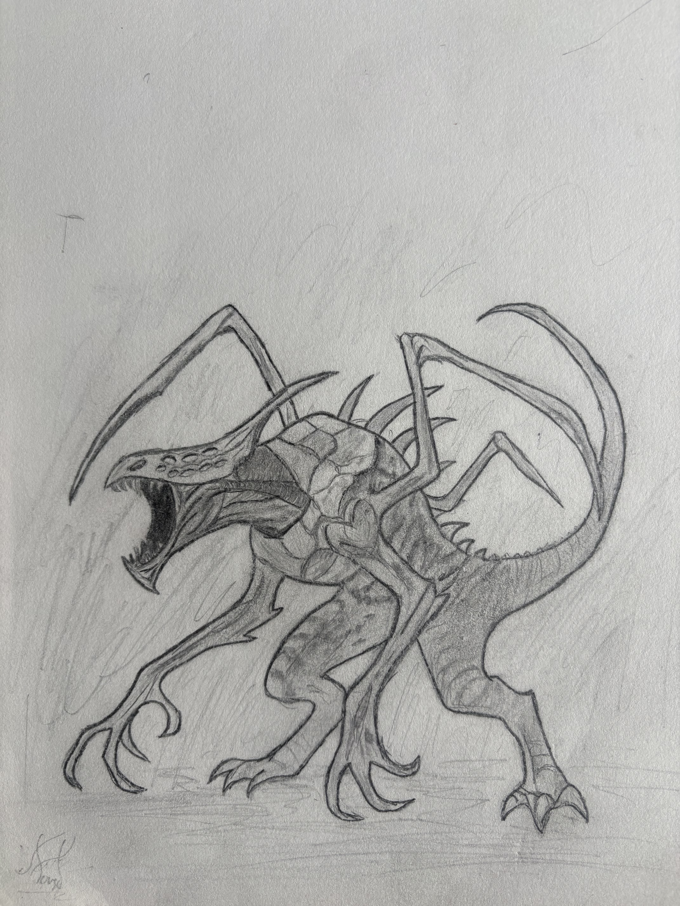
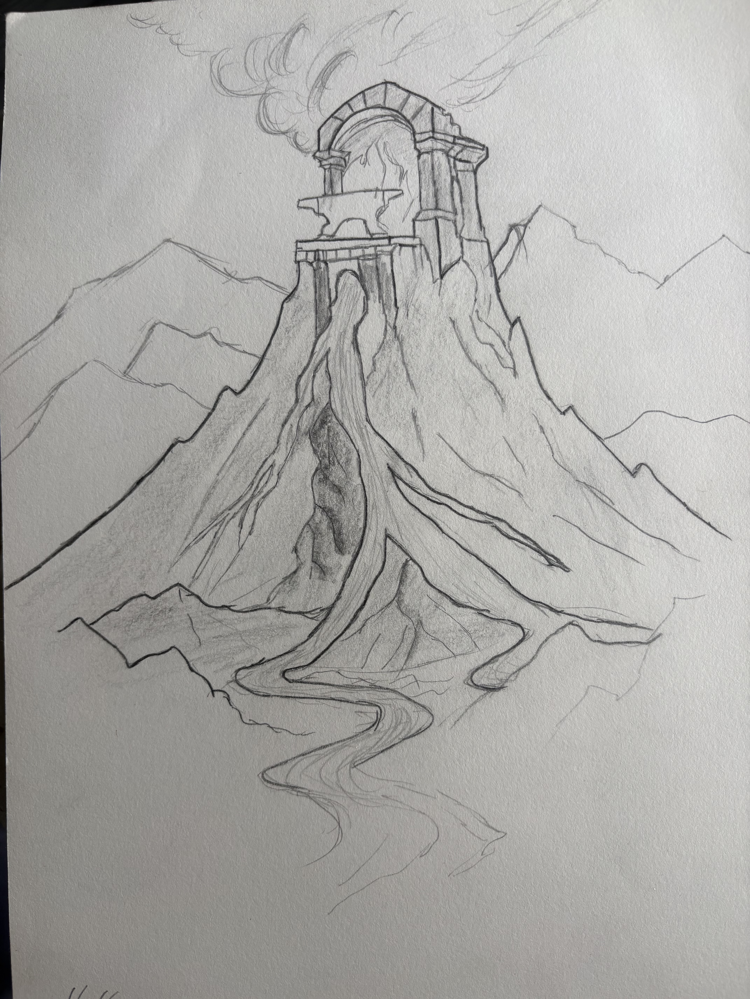
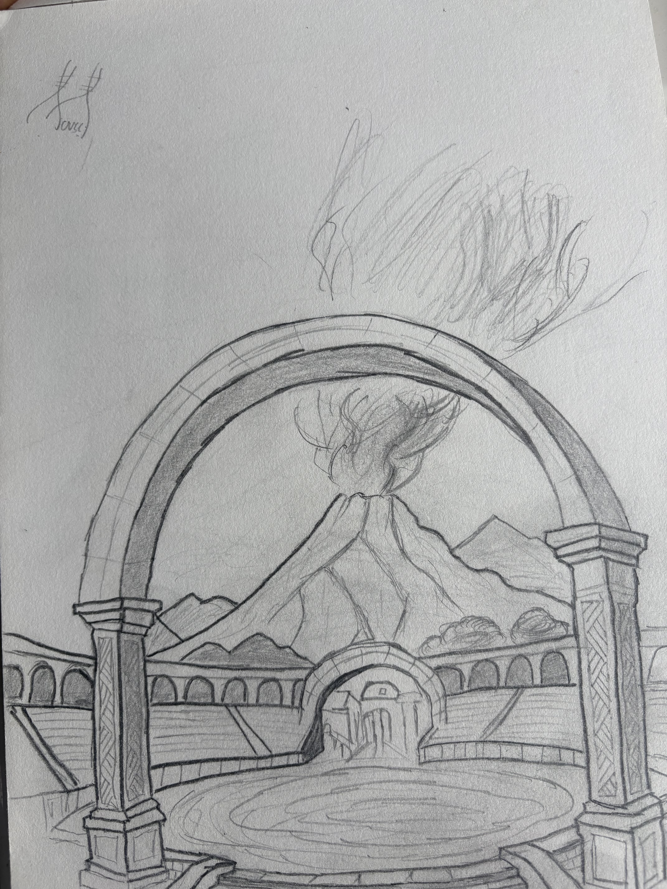
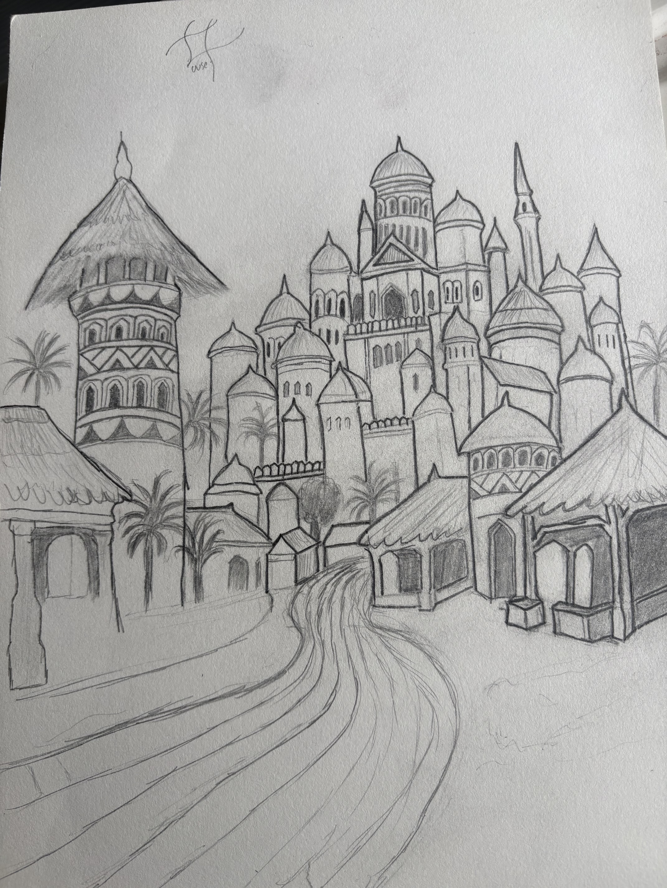
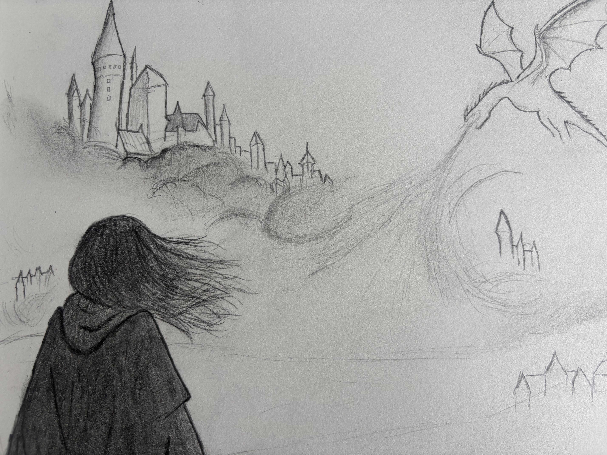

ORIGINAL NOVEL • CONCEPT ART • VISUAL DEVELOPMENT
Sango's Odyssey
Original concept art and visual development created for my fantasy novel, Sango's Odyssey, exploring creatures, environments, architecture, landmarks and the visual identity of a world inspired by Yoruba mythology.
Sango's Odyssey
Novel Visual Development
Author & Concept Artist
Traditional Pencil

01
Overview
Sango's Odyssey is an original fantasy novel that draws inspiration from Yoruba mythology, history and West African storytelling.
While developing the story, I created a series of traditional concept sketches to help define the appearance of important creatures, locations, structures and large-scale environments within the world.
The artwork was created as part of the writing and worldbuilding process, allowing me to explore how the environments and supernatural elements of the story might look before describing them in the novel.
02
Visual Development
My goal was not simply to create individual illustrations, but to build a visual language that could support the larger world of the story.
I explored different ideas through creature silhouettes, monumental architecture, city layouts, landscapes and cinematic compositions. These sketches helped me establish scale, mood and the relationship between characters and the environments around them.
03
Creature Design
The creature concepts explore supernatural threats within the world of Sango's Odyssey.
I focused on creating unusual silhouettes and anatomical structures that would make the creatures feel immediately distinct from ordinary animals or human enemies.
Features such as exaggerated limbs, armour-like surfaces and unusual proportions were used to reinforce their dangerous and unnatural presence.
04
Environment Design
Many of the locations in Sango's Odyssey are designed around large, mythic landmarks.
The Mountain Forge concept explores the idea of a monumental structure built into a remote mountain peak. The isolated location and large scale were intended to communicate the importance of the place before the reader learns anything about what occurs inside it.

05
Architecture & Landmarks
Architecture plays an important role in establishing the scale and identity of the world.
This environment study explores a ceremonial arena framed around a distant volcanic landmark. The composition uses symmetry and repeating structures to direct attention toward the landscape.

06
City & Palace Design
The city concepts helped me think about how important locations would appear at a larger scale rather than as isolated buildings.
The palace was designed to dominate the skyline and create a clear visual hierarchy between the ruling centre of the city and the settlement surrounding it.
Exploring the city visually also helped me understand distances, elevation and how characters might physically move through locations during the story.

07
Cinematic Storytelling
Some concepts were created less as design sheets and more as visual representations of moments from the story.
This sketch explores scale and anticipation by placing the viewer behind a flying creature as it approaches a distant city.
Creating moments like this helped me think about how the world could be framed cinematically and how location, distance and silhouette could support the emotional tone of a scene.

08
Creative Process
The visual development process was closely connected to the writing process.
When I encountered a location, creature or major visual idea that was difficult to define only through text, I would sketch it to better understand its proportions, structure and relationship to the surrounding world.
In some cases, the sketches changed how I approached the writing itself. Visualizing the environment revealed opportunities for movement, encounters and story moments that were less obvious when working only from written descriptions.
09
Areas Explored
10
Project Status
Sango's Odyssey is an ongoing original creative project.
The novel and its world continue to evolve, and these drawings represent part of the early visual development used to establish its environments, creatures and overall identity.